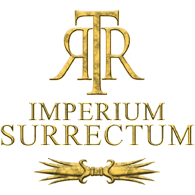
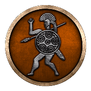
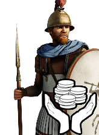
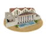

RTR: Imperium Surrectum
RTR: Imperium SurrectumRIS vs Vanilla — what is different

A player's guide to how RTR: Imperium Surrectum differs from vanilla *Rome: Total War Remastered*. Every number here is counted from the game's own data files; anything that could not be established says not determined rather than a guess.
At a glance
| Vanilla | RIS | Change | Vanilla | RIS | Change | Vanilla | RIS | Change | ||||||
|---|---|---|---|---|---|---|---|---|---|---|---|---|---|---|
| Playable factions | 19 | 230 | +211 | 12.1x | Factions in the game | 21 | 239 | +218 | 11.4x | Regions on the map | 103 | 1,311 | +1,208 | 12.7x |
| Settlements at campaign start | 96 | 1,305 | +1,209 | 13.6x | Unit types in the roster | 261 | 1,697 | +1,436 | 6.5x | Cultures | 6 | 22 | +16 | 3.7x |
| Building chains | 39 | 82 | +43 | 2.1x | Building levels (total) | 157 | 156 | -1 | 0.99x |
The short version: RIS is roughly an order of magnitude larger than vanilla in almost every direction a player notices — but not uniformly. The map and the unit roster grow enormously. The building tree does not: it grows *sideways* rather than deeper. Those two facts shape most of what plays differently.
Viewing this locally
GitHub renders these pages if you browse the repository. To read them on your own machine with the icons, cards and maps showing, double-click view-wiki.bat (or run ./view-wiki.sh on macOS/Linux). It needs Node.js and nothing else — no install step, no internet, no account. Your browser opens on its own.
A viewer is needed because a browser shows a .md file as raw text, and these pages are mostly tables. It also gives you the things a folder of files cannot: a search box over every page (press / to jump to it), a sidebar to move between sections, and a light/dark switch. The sortable tables below are ordinary HTML and work on their own if you would rather not run anything.
There are 4,289 pages in total: one per faction, region, unit and building chain, plus these overviews.
Sortable tables
For anything you want to sort or search rather than read, these work on GitHub Pages with no server:
- Unit roster — all 1,172 units, sortable by any stat
- Regions — all 1,311, sortable and searchable
- Factions — sortable by what each starts with
The world
| Pages | What is on them | Pages | What is on them | Pages | What is on them | Pages | What is on them | ||||
|---|---|---|---|---|---|---|---|---|---|---|---|
| All regions | 1,311 | The land: terrain, climate, fertility, water, port, and the trade goods placed inside its borders | All settlements | 1,311 | The cities: size, population, who holds them, what is built, what can be raised | Settlement sizes | 6 | Each rung of the ladder: the population it takes, what it first lets you build, how many start there | Trade goods | 46 | What each good is worth, where on the map it is, who holds it, what it unlocks |
| Region tag reference | 9 | What a region's terrain, climate, water, port, recruitment zone, homeland and fertility each decide | The map | — | How the density compares with vanilla |
Who plays it
| Pages | What is on them | Pages | What is on them | Pages | What is on them | Pages | What is on them | ||||
|---|---|---|---|---|---|---|---|---|---|---|---|
 All factions | 231 | Grouped by culture: what each starts with, its roster, its characters, its territory | Cultures | 22 | Who is in each, what its settlements are drawn with, and what the mod gates on being it | Beliefs | 53 | Where each is on the map and at what strength, whose people it is, who follows it | Character traits | 30 | Every visible trait: its levels, effects, how it is gained, and the traits that pull against it |
| Factions overview | — | How crowded the world is beside vanilla |
What they build and field
| Pages | What is on them | Pages | What is on them | Pages | What is on them | Pages | What is on them | ||||
|---|---|---|---|---|---|---|---|---|---|---|---|
 All units | 1,172 | Stats, cards, who can recruit each one and what they need to build first |  All buildings | 82 | Every chain: what each level does, what it costs, what it upgrades into | Units overview | — | How the roster compares with vanilla | Buildings and economy | — | A wider, shallower tree than vanilla's |
About these pages
Generated by scripts/gen-ris-wiki.js in the Provincia repository, which reads the RIS data files and the vanilla install and counts what it finds. Re-run it after a release to refresh them. Figures marked not determined are ones the generator declined to publish — usually because two independent counts of the same thing disagreed, which is a reason to fix the generator rather than to trust a number.